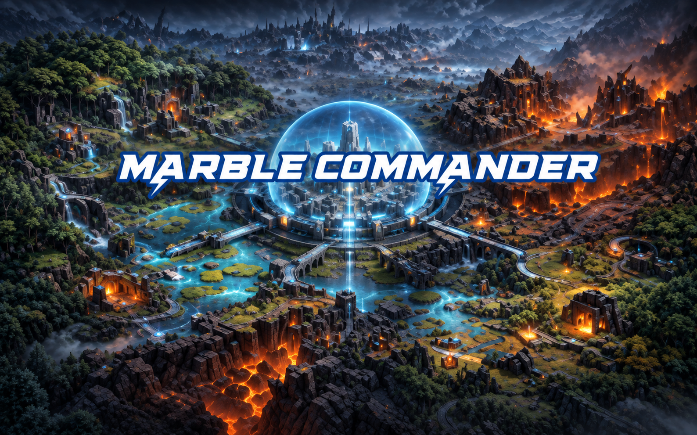
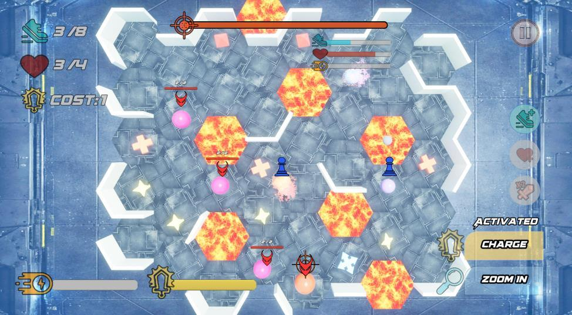
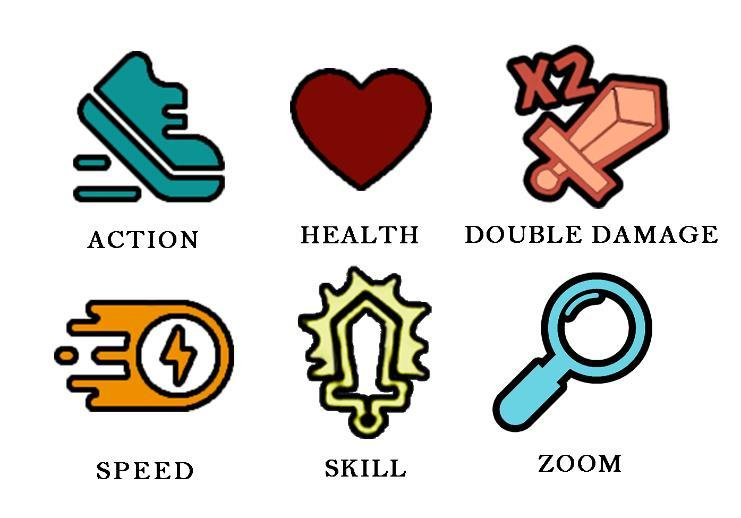
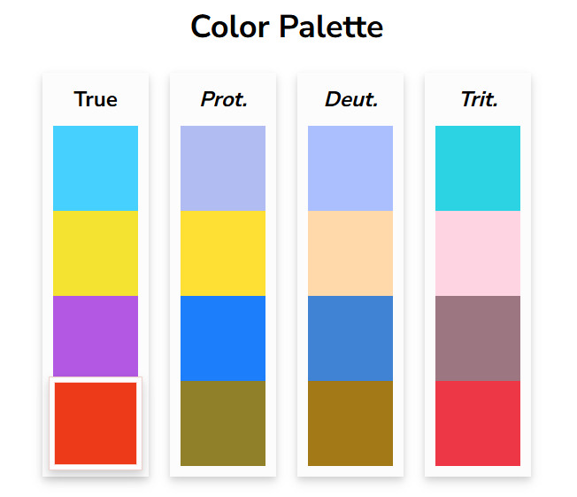
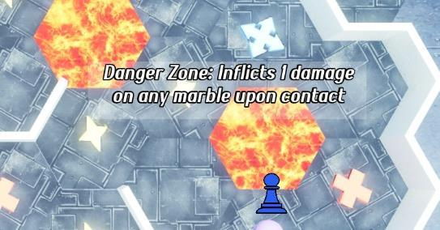
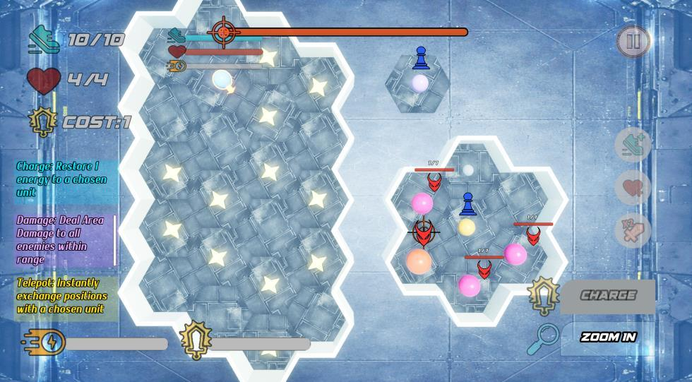

Marble Commander
弹珠指挥官PHYSICS PINBALL STRATEGY
在末日后的城市边境，指挥三颗能力各异的弹珠迎战怪物。每次瞄准与发射都会改变碰撞路线，也会影响伤害、资源和下一步选择。At the edge of a post-apocalyptic city, command three marbles with distinct abilities against invading monsters. Every aim and launch reshapes collisions, damage, resources and the next tactical choice.
- 项目年份PROJECT YEAR
- 2025
- 制作工具TOOLS
- Unreal Engine · Photoshop

项目视频Project Videos
项目概览Project Overview
把弹珠碰撞变成战术选择Turn marble collisions into tactical choices
玩家以末日据点指挥官的视角派遣三名成员，在关卡中清除威胁城市的弹珠怪物。弹道由瞄准角度与蓄力决定，碰撞、反弹和连锁移动把物理过程直接转化成伤害与资源决策。From a doomsday stronghold, the player directs three units to clear marble monsters threatening the city. Aim and charge shape each trajectory; collisions, rebounds and chain movement turn physical motion directly into damage and resource decisions.
碰撞、回合与胜负边界Collision, Turns & Mission Limits
同一次发射既是攻击，也是移动和资源路线规划；弹珠的物理状态会持续影响后续结果。One launch is an attack, a movement decision and a resource route. A marble's physical state continues to shape what happens next.
查看生命与行动点，决定由谁出手。Check health and action points before choosing who acts.
移动鼠标设定方向，右键蓄力发射。Move the cursor to set direction, then right-click to charge and launch.
命中、反弹或借助惯性改变敌我位置。Hit, rebound or use momentum to reposition allies and enemies.
处理伤害、拾取和技能能量，安排下一次行动。Resolve damage, pickups and skill energy, then plan the next action.
多次反弹可能带来更高伤害；借助惯性还可将敌人撞下平台。Repeated rebounds can build damage, while momentum can knock enemies from ledges.
生命归零时弹珠被摧毁；存活单位仍可获得队友支援。At zero health a marble is destroyed; surviving units can still be supported by allies.
行动点归零后无法移动，但仍会参与碰撞连锁，也能使用技能。At zero action points, a marble cannot move but can still take part in collision chains and use skills.
单位能力与资源取舍Unit Roles & Resource Choices
三名单位拥有不同的生命、行动点和技能消耗；能量归拾取它的单位所有，技能越强，解锁成本越高。Each unit has different health, action points and skill costs. Energy belongs to the unit that collects it, and stronger skills require more energy.
蓝色弹珠Blue Marble
行动点最高、生命值最低。可以承担较多移动与能量收集，但需要谨慎控制受击风险。Has the most action points and the least health. It can handle more movement and energy collection, but needs careful protection.
黄色弹珠Yellow Marble
技能可与任意单位交换位置，为队伍提供机动性，也能把关键单位送入有效攻击位置。Its skill swaps positions with any unit, giving the squad mobility and placing a key unit where it can attack.
紫色弹珠Purple Marble
拥有范围伤害技能，但机动性最低。需要队友传递能量或协助调整站位，才能发挥范围攻击。Uses an area-damage skill but has the lowest mobility. It relies on allies to supply energy or improve its position.
反馈与可读性Feedback & Readability
发射、蓄力、撞击和击败敌人都配有声音提示；生命受损时弹珠短暂变红。技能目标被选中后，弹珠显示燃烧效果，技能按钮出现“已激活”状态，让玩家及时确认操作结果。Launches, charging, impacts and enemy defeats use distinct audio cues. A marble flashes red when damaged; a burning effect and an “Activated” button state confirm target selection and skill use.



试玩发现如何改变设计How Playtests Changed the Design
让熔岩伤害一眼可知Make lava damage explicit
试玩者把熔岩理解成触碰即死，也没找到补给物。增加悬停说明，明确危险区域每次接触扣 1 点生命。Players read lava as instant death and missed pickups. A hover tooltip now explains that each contact with the hazard removes 1 health.

把技能教学放进必经关卡Teach skills through a required trial
有玩家未触发技能教学。新增技能试炼关：先收集并转移能量，再练习换位与范围攻击；通关需要使用技能，同时保留不同战术路线。One player never reached the skill tutorial. A dedicated trial now teaches energy transfer, swapping and area damage. Clearing requires skill use while leaving room for different tactical routes.

突出队友与敌人状态Make ally and enemy states easier to read
试玩者没注意到仍有友方单位可行动，也难判断敌人还需承受多少伤害。加入所有在场友方单位的醒目标识与敌人生命条。Players overlooked available allies and could not tell how much damage enemies could take. The interface gained clear indicators for every present ally and enemy health bars.
修正误操作与状态卡顿Resolve control and state issues
根据试玩调整开局自动选中与教程流程，允许取消蓄力，为离场弹珠添加重置碰撞体，并强化碰撞移动反馈、限制敌人音效。Testing led to changes in initial unit selection and tutorial flow, cancelable charging, reset collision volumes for off-screen marbles, stronger collision feedback and more controlled enemy audio.